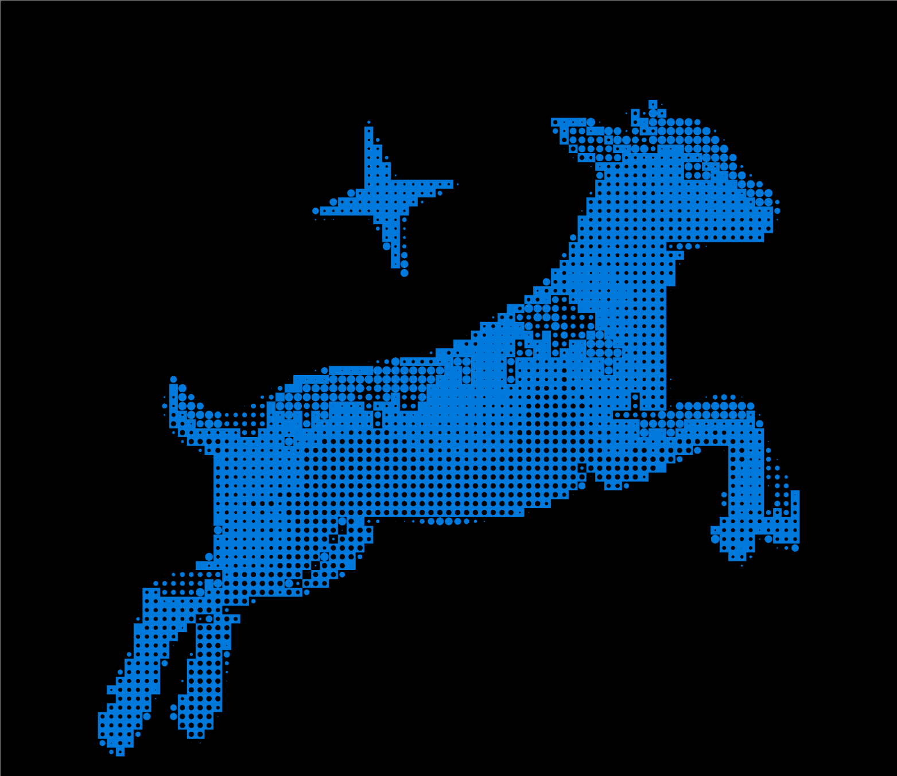

Stories, programmes and small actions that keep Pashmina alive.


Who makes our Pashmina
 kashmir
kashmir
 ladakh
ladakh
 srinagar
srinagar
Changthangi herders – Families and cooperatives in Changthang who rear the goats and comb out the fine undercoat each spring.
Embroiderers – Sozni and Aari artisans who translate botehs, chinar leaves and jaals onto Pashmina surfaces with microscopic stitches.
Spinners – Mostly women, turning cleaned fibre into hand‑spun yarn with simple wheels, still considered the only ones who can spin Pashmina at such fineness.
Weavers – Artisans in Ladakh and Kashmir working on pit looms and wooden looms, building the cloth pick by pick.
Testers & GI teams – Labs and inspection bodies that test fibre fineness, hand‑spun yarn and hand‑woven fabric before a GI mark is sealed.
What We Do With Our Community
Be a
Part of This
Main Bazaar Road, Leh, Ladakh 194101, India
+91 98765 43210
